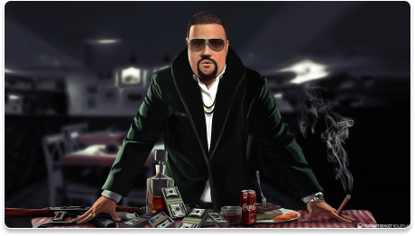
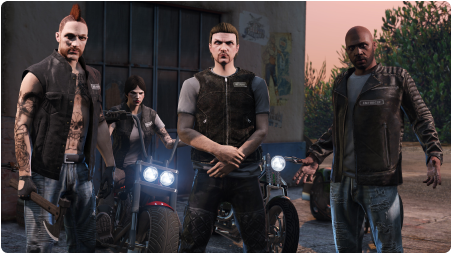
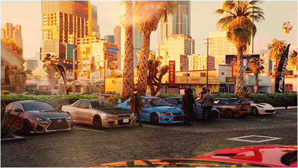

GUIDE BOOK
ESCAPE
Esc RolePlay
NEWS
JOBS
Welcome To Esc RolePlay
Above all, have fun and enjoy your time here at [Server Name]. We're here to create memorable adventures together.
ANNOUNCES!
Challenge yourself with our monthly community quest! Complete it for a chance to win exclusive rewards and recognition.
WELCOME
JOBS
EVENTS
A roleplay event is a creative and interactive gathering where participants take on fictional characters and immerse themselves in a carefully crafted scenario. These events often take place in various settings, such as historical, fantasy, or futuristic worlds, allowing participants to step into the shoes of their chosen characters and engage in storytelling, problem-solving, and improvisation. Roleplay events can range from tabletop games like Dungeons & Dragons to live-action events where participants physically act out their characters' actions and dialogue. These events provide an opportunity for individuals to unleash their imagination, develop storytelling skills, and enjoy collaborative adventures with fellow enthusiasts, making them a popular choice for entertainment and social engagement.
WELCOME
NEWS
Available Jobs!
POLICE JOB
These virtual law enforcement officers are responsible for maintaining order and responding to a variety of in-game emergencies, such as crimes and accidents. They perform tasks like conducting traffic stops, investigating crimes, and engaging in high-speed pursuits while adhering to strict roleplay rules and server regulations. This role demands quick decision-making, effective communication, and teamwork.


AMBULANCE JOB
Ambulance Job FiveM is a popular role-playing game mode for the video game Grand Theft Auto V. In this game mode, players take on the role of an ambulance driver or paramedic and respond to emergency calls. The goal of the game is to provide medical assistance to patients and transport them to the hospital.


FIRE FIGHTER JOB
Fire Fighter Job FiveM is a popular role-playing game mode for the video game Grand Theft Auto V. In this game mode, players take on the role of a firefighter and respond to emergency calls. The goal of the game is to extinguish fires, rescue civilians, and provide medical assistance. give me a 3 line paragraph about police job fivem


TAXI JOB
Taxi Job FiveM is a popular role-playing game mode for the video game Grand Theft Auto V. In this game mode, players take on the role of a taxi driver and transport passengers to their destinations. The goal of the game is to provide a safe and efficient transportation service to the citizens of Los Santos.


GARBAGE JOB
Garbage Job FiveM is a popular role-playing game mode for the video game Grand Theft Auto V. In this game mode, players take on the role of a garbage collector and collect trash from dumpsters and bins around the city. The goal of the game is to keep the city clean and free of garbage.


MINER JOB
Miner Job FiveM is a popular role-playing game mode for the video game Grand Theft Auto V. In this game mode, players take on the role of a miner and extract resources from the ground. The goal of the game is to collect as many resources as possible and sell them for a profit.


TANKER JOB
A tanker job in FiveM is a job where a player transports goods from one location to another. This can be done using a variety of vehicles, such as trucks, trains, and airplanes. The player is responsible for ensuring that the goods are delivered safely and on time.


DELIVERY JOB
A delivery job in FiveM is a job where a player transports goods from one location to another. This can be done using a variety of vehicles, such as cars, vans, and trucks. The player is responsible for ensuring that the goods are delivered safely and on time.


TRUCKER JOB
A trucker job in FiveM is a job where a player transports goods from one location to another. This can be done using a variety of vehicles, such as semi-trucks, dump trucks, and flatbeds. The player is responsible for ensuring that the goods are delivered safely and on time.


ILLEGALE JOB
An illegal job in FiveM is a job where a player engages in illegal activities, such as drug dealing, prostitution, and murder. This can be done using a variety of methods, such as selling drugs to other players, engaging in prostitution, and killing other players. The player is responsible for ensuring that they do not get caught by the police or other law enforcement.